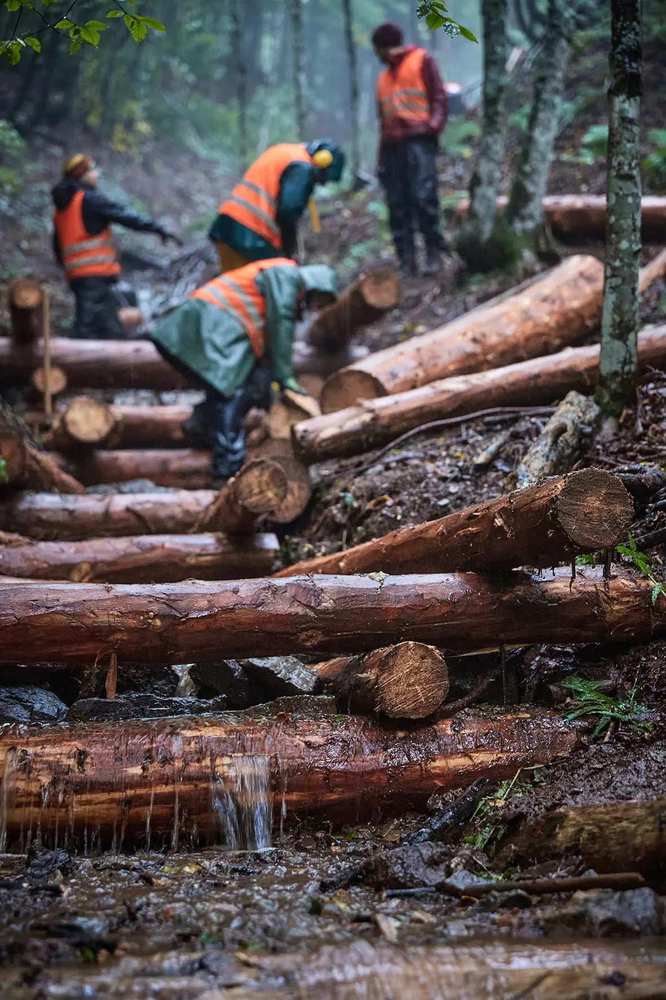

Portfolio / Documentaries & Brand Films
Documentary storytelling for companies, organizations, and meaningful projects.
We create authentic documentary-style films and brand stories for companies, organizations, and environmental projects. We focus on real people, transformation, and emotional storytelling.
Your organization deserves a film like this.
Tell us about your project – we usually reply within 48 hours.